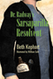
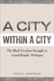

|
St. Peter's Church
Faith in Action for 250 Years
Biddle, Cordelia Frances, Elizabeth S. Browne, Alan J. Heavens and Charles P. Peitz
Laurence D. Fish Award for Outstanding Parish History from the National Episcopal Historians and Archivists, 2014 |

|
Disability and Passing
Blurring the Lines of Identity
edited by Brune, Jeffrey A. and Daniel J. Wilson
Contributor Dea H. Bolster, won the Disability History Association Award for Best Book Chapter, 2015 |

|
The Smoke of the Gods
A Social History of Tobacco
Burns,
Eric
A "Best of the Best from the University Presses" program selection at the 2007 ALA Annual Conference |

|
The
Spirits of America
A Social History of Alcohol
Burns,
Eric
A "Best of the Best from the University Presses" program selection at the 2004 ALA Annual Conference |

|
On the Margins of Citizenship
Intellectual Disability and Civil Rights in Twentieth-Century America
Carey, Allison C.
Scholarly Achievement Award, North Central Sociological Association, 2010 |

|
The
Story of Reo Joe
Work, Kin, and Community in Autotown, U.S.A.
Fine,
Lisa M.
Cugnot Award of Distinction, 2005
Selected for inclusion on the list of Michigan Notable Books, 2005
Chosen by the Adult Non-fiction Committee of the Society of Midland
Authors as the first runner-up, 2004-5 |

|
Out in the Union
A Labor History of Queer America
Frank, Miriam
Outstanding Academic Title, Choice, 2015 |

|
In
Transit
The Transport Workers Union in New York City, 1933-1966
Freeman,
Joshua B.
Co-winner of the Taft Book Award, 1989 |

|
Shadows
on the Past
Studies in the Historical Fiction Film
Grindon,
Leger
Outstanding Academic Title, Choice, 1995 |

|
The Temp Economy
From Kelly Girls to Permatemps in Postwar America
Hatton, Erin, foreword by Nelson Lichtenstein
Honorable Mention, Labor and Labor Movements Section of the American Sociological Association, 2012 |

|
Second Cities
Globalization and Local Politics in Manchester and Philadelphia
Hodos, Jerome I.
Kenneth Jackson Best Book Award from the Urban History Association, 2011 Outstanding Academic Title, Choice, 2012 |

|
Beyond Preservation
Using Public History to Revitalize Inner Cities
Hurley, Andrew
National Council on Public History's Book Award Award, 2012 |

|
Model City Blues
Urban Space and Organized Resistance in New Haven
Jackson, Mandi Isaacs
Urban Communication Foundation Jane Jacobs Urban Communication Publication Award, 2008 |
|
The International Monetary Fund and Latin America
The Argentine Puzzle in Context
Kedar, Claudia
Honorable Mention, Luciano Tomassini Latin American International Relations Book Award Committee of the Latin American Studies Association, 2014 |

|
Dr. Radway's Sarsaparilla Resolvent
Kephart, Beth
Kirkus Reviews' Best in Children's Books,
2013
Parrott Library Award from the St. Albans School Library, 2014 |

|
The Death and Life of the Single-Family House
Lessons from Vancouver on Building a Livable City
Lauster, Nathanael
Canadian Sociological Association's John Porter Tradition of Excellence Book Award, 2017
|

|
Fireweed
A Political Autobiography
Lerner,
Gerda
A PW Book of the Day, June, 2002
A BookSense top 76 pick in the category, "Life Stories of Some
Famous and Not-So-Famous Women," March/April, 2003
Outstanding Achievement Recognition by the Wisconsin Library Association
Literary Awards Committee, 2003 |

|
Why
I Burned My Book and Other Essays on Disability
Longmore,
Paul K.
Honorable Mention in the category of Disability Rights, Gustavus
Myers Book Award, 2004
Paul Longmore was selected by the American
Association of People with Disabilities (AAPD) to receive The
Henry B. Betts Award, 2004 |

|
East
Indian Music in the West Indies
Tân-Singing, Chutney, and the Making of Indo-Caribbean Culture
Manuel,
Peter
Gordon K. Lewis Award from the Caribbean Studies Association,
2000 |

|
The City on the Hill from Below
The Crisis of Prophetic Black Politics
Marshall, Stephen H.
American Political Science Association's Foundations of Political Theory First Book Award, 2012 |

|
The
New Left Revisited
edited
by McMillian, John and Paul Buhle
Outstanding Academic Title, Choice, 2003 |

|
Deregulating Desire
Flight Attendant Activism, Family Politics, and Workplace Justice
Murphy, Ryan Patrick
The Organization of American Historians' David Montgomery Award for the best book
on a topic in American labor and working-class history, 2017
|

|
White
Boy
A Memoir
Naison,
Mark D.
Mark Naison is the recipient of the Poe Award for Literary
Excellence of the Bronx County History Society, 2004 |

|
A City within a City
The Black Freedom Struggle in Grand Rapids, Michigan
Robinson, Todd E. Outstanding Academic Title,
Choice, 2013
Chosen as the Grand Rapids Mayor's Book of the Year, 2016 |

|
Rubble
Films
German Cinema in the Shadow of the Third Reich
Shandley,
Robert R.
Outstanding Academic Title, Choice, 2002 |

|
Veils
and Daggers
A Century of National Geographic's Representation of the
Arab World
Steet,
Linda
The American Educational Studies Association (AESA) Critics’
Choice Award, 2001 |

|
The
Crisis of Growth Politics
Cleveland, Kucinich, and the Challenge of Urban Populism
Swanstrom,
Todd
Best Book in Urban Politics Award, American Political Science
Association, 1988 |
|
Mickey
Mouse History and Other Essays on American Memory
Wallace,
Michael
Historic Preservation Book Prize, The Center for Historic
Preservation at Mary Washington College, 1997 |

|
The New York Young Lords and the Struggle for Liberation
Wanzer-Serrano, Darrel
National Communication Association Critical and Cultural Division Book of the Year 2017
|

|
Envisioning Emancipation
Black Americans and the End of Slavery
Willis,
Deborah and Barbara Krauthamer One of the Top 25 Outstanding Academic Titles,
Choice, 2013
Outstanding Literary Work-Non-Fiction, NAACP Image Awards, 2014 |

|
Historical
Thinking and Other Unnatural Acts
Charting the Future of Teaching the Past
Wineburg,
Sam
Winner of the Frederic W. Ness Award, The Association of
American Colleges and Universities, 2002 |

|
Claiming
America
Constructing Chinese American Identities during the Exclusion
Era
edited
by Wong, K. Scott and Sucheng Chan
Book Award from the Association for Asian American Studies,
2001 |